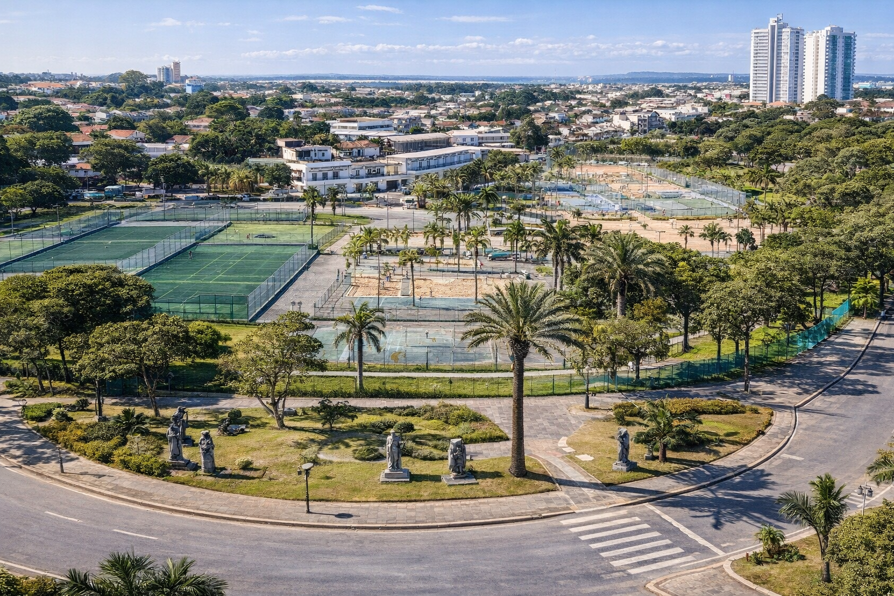
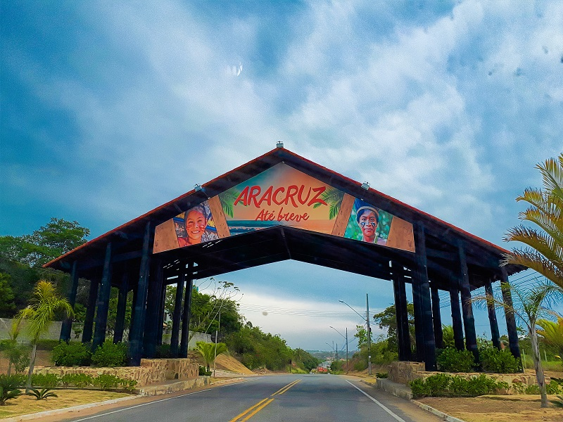

Desafios das Imagens
Aracruz
Parte litoranea de Aracruz
Outra imagem de Aracruz

Parte urbana de Aracruz
Aracruz, agora com alteração de tamanho

 Parte litoranea de Aracruz
Parte litoranea de Aracruz